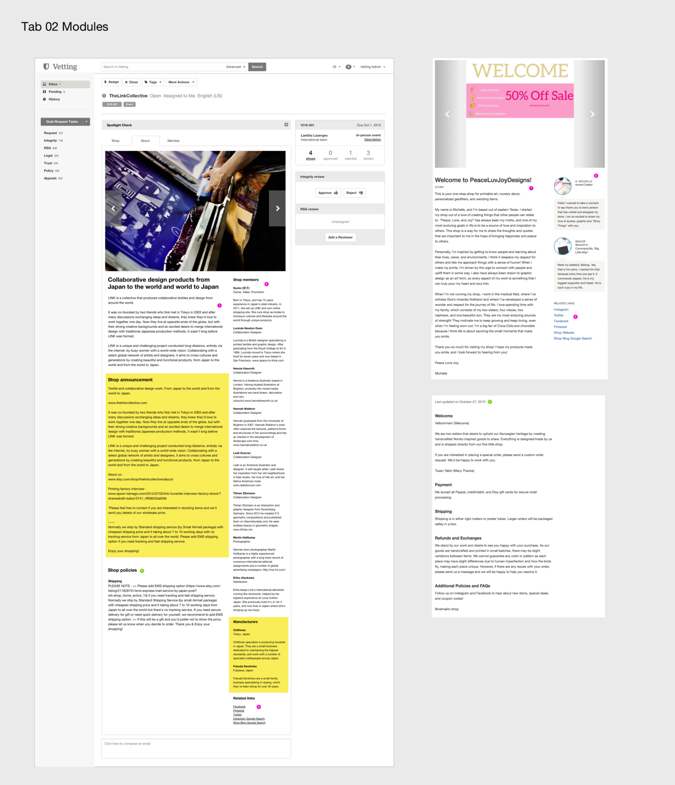
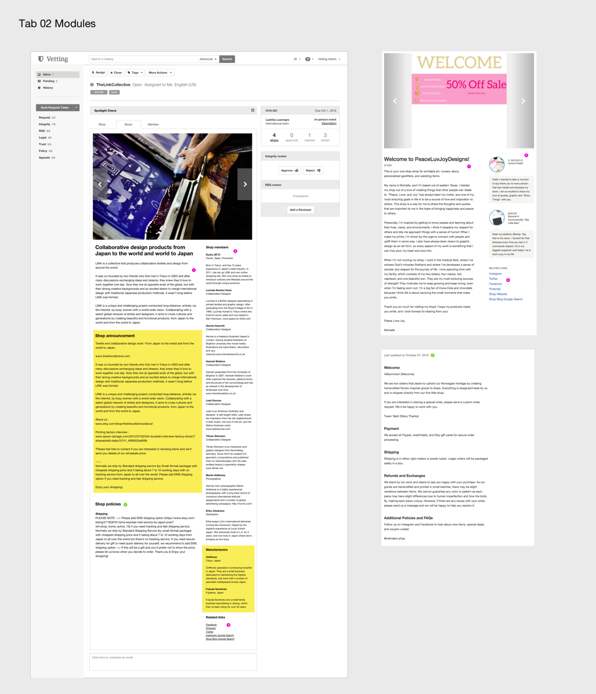

MongoDB customers are able to request support online, but the web portal experience is confusing and limited to signed-in users with specific product plans. From December 2017 to August 2018, I worked on a redesign of the Customer Support portal to make it more intuitive, address known problems, and provide options for all users. [image could be a screenshot of a portal page, or an illustration from one of the graphics]
MongoDB has an incredible support organization staffed by deeply technical support engineers, but there hadn’t been a dedicated designer on the team until I joined. One of a number of support tools, the customer-facing Support Portal was functional but had a backlog of consistent problems and a long list of feature improvements that needed design attention. The portal had also been built using an older version of the MongoDB design system, which meant it was in need of a visual update.

This project grew out of a smaller request to make a few updates to the way knowledge base articles were organized and displayed. I had to spend time with the Portal to understand where the knowledge base fit in, and a few things struck me as odd. First, there was no Help Center or Support Home on the MongoDB marketing site – support either existed as a paid, signed-in service or customers would have to somehow find our Google Group and Stack Exchange answers on their own. Second, we didn't make any attempts to let users find answers on their own before opening cases. There were also a number of consistent problems and questions (changing owner to admin, managing distribution groups). Add the competitive audit. [images should be existing and competitive audit]


Change these
Describe the Help Center and other proposals in the first draft, as well as changes from feedback.
 



change these
this can be about adding university and professional services, and reorganizing by project.


Change these
this can be about adding university and professional services, and reorganizing by project.
Change these
{kind=link}